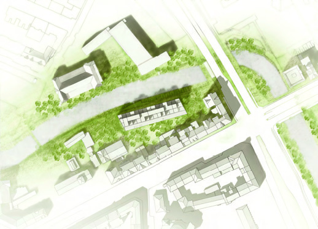
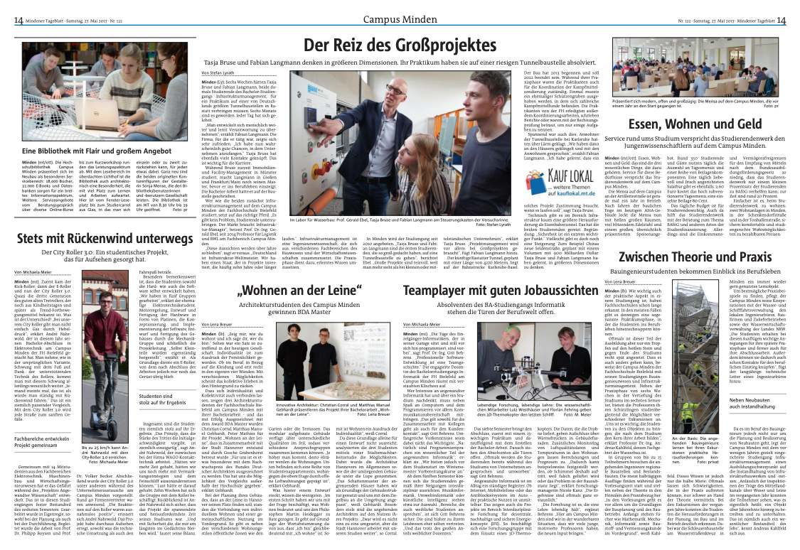

Living on the Leine — Adaptive river-edge housing in Hanover.
Awarded the 2016 BDA Masters Prize, the project translates typological principles into a contemporary, climate-responsive urban form along the River Leine.
Project Overview
A block has been chosen as the basic form for the residential development on Franz-Mock-Weg. Its volume corresponds to that of the founding-period blocks and forms a spatial border towards the River Leine, creating a sheltered courtyard to the south. Subtractions of 5 x 5 x 3 m carve terraces, light courts, and varied heights that generate views and microclimates while maintaining the urban perimeter.
- Typology: Multi-family housing
- Location: Hanover, Germany — Franz-Mock-Weg
- Status: Academic project, BDA Masters Prize 2016

Design Strategy
A block has been chosen as the basic form for the residential development on Franz-Mock-Weg. Its volume corresponds to that of the building blocks from the founding period and forms a spatial border towards the River Leine. This creates a sheltered courtyard in the southern part of the site. A distinctive feature of the building blocks is that they form a homogeneous spatial border towards the street. However, the rear of the buildings is heterogeneous: the parts of the buildings have different heights, the depth of the annexes varies, and the shape of the roof is free. On the floor plan, this looks like a kind of ‘justified composition’. This ‘justified composition’ is adapted vertically. The floor plan is now a rectangle, with heights staggered. To model the shape, parts of the maximum buildable volume (8 floors, 24 m okF) are subtracted. These parts are 5x5x3 m in size. The resulting sculpture allows for spacious terraces and multiple views and perspectives. The residential construction runs parallel to the Leine River and is oriented north-south. The entire length of the site is utilised, taking into account the separation distances and the 5 m construction grid. This results in a length of 75 m. To better locate the structure, the lines of the terrain and the construction from the founding period are taken into account. In this way, the ends of the residential building are bevelled and the floor plan becomes a parallelogram. Access is still via Brühlstraße. The city plot remains unchanged. Cars will now only have to use a smaller part of Franz-Mock-Weg, as the entrance to the car parks is located to the east. This allows the pedestrian and bicycle lane between the building and the Leine River to be widened. Pedestrians and cyclists can access the development core via two entrances in the north. Two staircases are sufficient to access all apartments, also in accordance with fire protection regulations.




BDA Masters 2016 — Jury Remarks
The project convinces through an autonomous typological approach derived from its surroundings. Drawing on the adjacent Wilhelminian blocks, it interprets the strict street alignment and the articulated rear volumes as inspiration for a sculptural building. The bar that defines the inner block along the River Leine becomes a communicative living form without severing the garden from the open space. Access from the riverside path keeps the lane car-free. The expressive brick mass dissolves toward the top, making room for loggias and terraces that foster life outdoors. With a consistent north–south orientation, the through-apartments are conceived for varied needs, including maisonettes. The authors handle the sculptural form playfully, allowing the building to stand out while fitting the urban fabric. Altogether, the work convinces with its lively configuration and distinctive expression.

Credits
BDA Masters 2016 winner. Teamwork: Matthias Manuel Gebhardt, Peter Matthies, Christian Corral — my favourite team of people to work with.